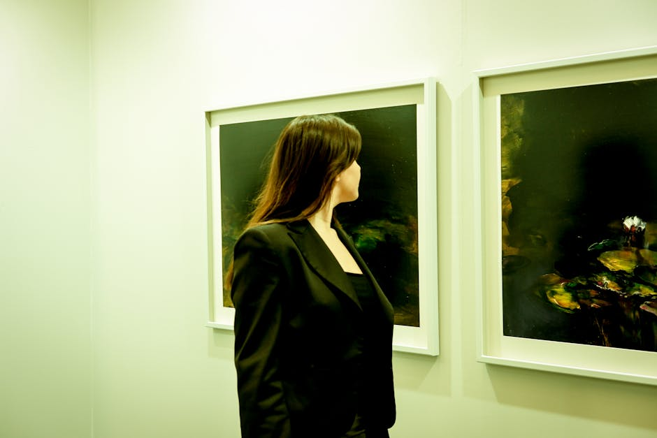
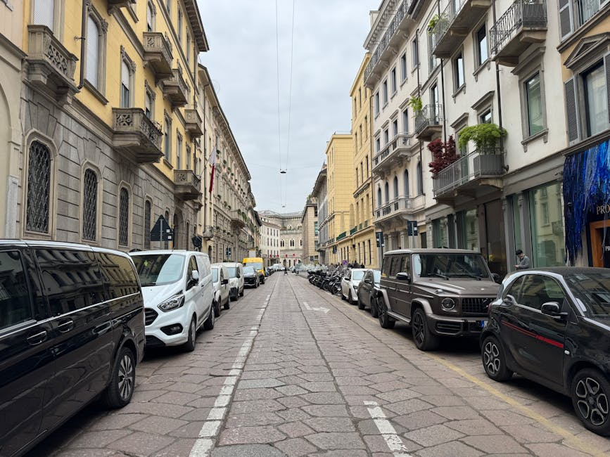

PectinFlow è la tua bussola editoriale per navigare tra arti visive, teatro, letteratura e le complesse dinamiche della società italiana di oggi.
Un'immersione profonda nelle discipline che plasmano il nostro modo di pensare e vivere.

Scopri le mostre più innovative, gli artisti emergenti e le correnti visive che stanno ridefinendo l'estetica moderna. Analizziamo le opere non solo per la loro bellezza, ma per il messaggio intrinseco che trasmettono alla nostra epoca.
Recensioni approfondite, interviste ad autori e sguardi dietro le quinte delle produzioni teatrali che animano il dibattito culturale. Dalla prosa contemporanea alla poesia, diamo voce alle parole che lasciano il segno.
Analisi acute e riflessioni sulle trasformazioni sociali, i costumi e le nuove prospettive che caratterizzano l'Italia di oggi. Un blog dove la cultura contemporanea diventa strumento per comprendere il presente e immaginare il futuro.
PectinFlow nasce dall'esigenza di creare uno spazio di riflessione e approfondimento sulle molteplici sfaccettature della nostra epoca. Attraverso il nostro blog di cultura e società contemporanea, offriamo uno sguardo attento su ciò che muove l'immaginario collettivo. Dalle avanguardie nelle arti visive al teatro d'innovazione, fino alla letteratura emergente, il nostro obiettivo è stimolare il pensiero critico e fornire chiavi di lettura per decodificare la complessa società italiana in cui viviamo.

Esplora i dettagli del nostro progetto editoriale.
PectinFlow è un blog dedicato alla cultura e società contemporanea. Ci occupiamo di recensire e analizzare le ultime tendenze nelle arti visive, nel teatro e nella letteratura, offrendo al contempo saggi e riflessioni sulle dinamiche sociali che caratterizzano l'Italia odierna.
Il nostro team editoriale si impegna a pubblicare nuovi articoli, recensioni e approfondimenti con cadenza settimanale, per garantire ai nostri lettori un flusso costante di idee e spunti di riflessione sulla cultura contemporanea.
Sebbene il nostro focus principale sia la società italiana, crediamo che la cultura non abbia confini. Pertanto, analizziamo regolarmente opere, autori e fenomeni internazionali che influenzano o dialogano con il panorama culturale del nostro Paese.
Assolutamente sì. Incoraggiamo il dialogo e la partecipazione. Se hai un'idea per un articolo sulle arti visive, una recensione di un libro o un saggio sulla società, contattaci tramite il modulo dedicato. La nostra redazione valuta con interesse i contributi esterni.
Il modo migliore è visitare regolarmente il nostro sito e seguire le sezioni tematiche. Stiamo inoltre implementando un sistema di notifiche per informare i nostri lettori più assidui sulle pubblicazioni di maggior rilievo riguardanti il teatro e la letteratura.
Le voci di chi segue le nostre correnti culturali.
"Una vera boccata d'aria fresca. Le analisi sulla società italiana sono sempre lucide, documentate e mai banali. È diventato il mio appuntamento fisso della domenica mattina."
— Marco T., Milano
"Ottima la sezione dedicata al teatro e alla letteratura. Grazie a PectinFlow ho scoperto autori emergenti e opere teatrali sperimentali di cui ignoravo l'esistenza."
— Silvia R., Roma
"Il miglior blog per restare informati sulle arti visive contemporanee. Le recensioni delle mostre sono scritte con competenza e trasmettono una vera passione per l'arte."
— Lorenzo M., Torino
Vuoi proporre un tema di cultura contemporanea, una recensione o collaborare con noi? Compila il modulo sottostante.